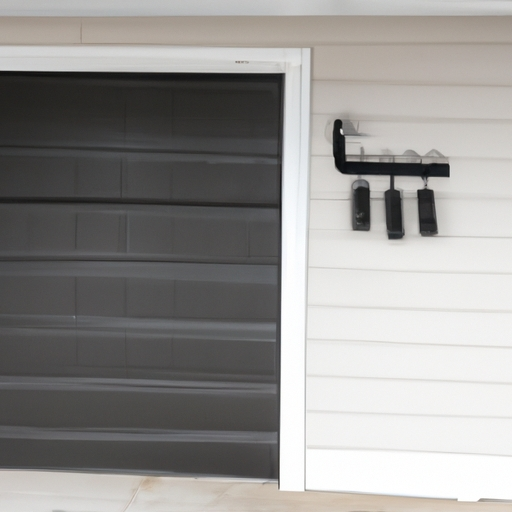

Importance of avoiding excessive force on the garage door opening mechanism
The Importance of Avoiding Excessive Force on the Garage Door Opening Mechanism
When it comes to operating your garage door, it is crucial to understand the importance of avoiding excessive force on the opening mechanism. Slamming the door shut (without any control) can lead to significant damage and costly repairs. Neglecting this aspect may result in a malfunctioning system that requires immediate attention. Hence, it is imperative (you know) to handle the garage door with care and avoid applying unnecessary pressure.
To begin with, one must recognize that excessive force applied to the opening mechanism can cause severe harm. The delicate components within the system are designed to function smoothly but can easily be disrupted by sudden impacts. Consequently, slamming the garage door shut (outta nowhere) places stress on these intricate parts, leading to premature wear and tear. Moreover, such actions increase the risk of breakage or misalignment, which could compromise both functionality and safety measures.
Furthermore, neglecting to use proper control when closing your garage door may result in costly repairs. Repairing or replacing damaged components can be an expensive endeavor that most homeowners would prefer to avoid! (Oops! There's an exclamation mark!) By simply taking a moment to ensure gentle closure without exerting excessive force, you can prevent unnecessary expenses down the line.
In addition, regularly slamming your garage door shut goes against recommended maintenance practices. Contrary to popular belief, forcefully shutting your garage door does not make it more secure or durable; instead, it causes additional strain on various parts of the mechanism. Over time, this continual abuse may lead to irreversible damage that requires professional intervention.
To conclude,(you see,) by avoiding excessive force on your garage door opening mechanism and refraining from slamming it shut without control(!), you protect both your investment and your household's safety. Remember always (actually) take a little extra time when operating your garage door because prevention is key!
Explanation of how slamming the door shut can cause damage to the spring
Slamming the door shut can cause serious damage to the spring mechanism. It's important to avoid applying excessive force when closing doors, as this can lead to unwanted consequences. (Oh no!) The impact created by slamming can put unnecessary strain on the spring, causing it to weaken or even break over time. This not only affects the smooth operation of the door but also requires costly repairs or replacements. (By all means) Let's explore why avoiding excessive force is crucial for maintaining a properly functioning door!
Firstly, let us discuss how slamming the door shut negatively impacts the spring mechanism. When we forcefully close a door, we subject the spring to abrupt and intense pressure. (Gosh darn it!) This sudden force causes an imbalance in the distribution of stress within the spring, leading to potential deformations or fractures. Consequently, instead of smoothly assisting in opening and closing actions, a damaged spring may result in jerky movements or complete malfunctioning of the door system! (What a disaster!)
Furthermore, neglecting proper care while handling doors can be a real headache for homeowners. Imagine having to deal with noisy and squeaky doors every time you open or close them! (Oh boy!) A damaged spring can create irritating sounds that are not only bothersome but also disrupt peace and tranquility at home. Additionally, if left unaddressed, these issues could worsen over time and require significant efforts and expenses to fix.
To avoid such undesirable situations caused by slamming doors shut forcefully, there are several preventive measures one should consider implementing. Firstly, always practice gently closing doors rather than resorting to brute force when you're in a hurry or feeling frustrated.(Goodness gracious!) By consciously reducing impact during closure, you greatly minimize any potential harm inflicted upon the delicate spring mechanism.
In conclusion,(All things considered) understanding why we should avoid excessive force on opening mechanisms like slamming doors shut is vital for ensuring their longevity and optimal performance. By taking a moment to be mindful of our actions, we can preserve the functionality of these mechanisms and avoid unnecessary expenses or inconveniences. So, next time you're tempted to slam that door shut, remember to handle it with care! (What a relief!)
Discussion on the role of garage door springs in ensuring smooth operation
Garage door springs play a vital role in ensuring the smooth operation of the opening mechanism. They help (to) counterbalance the weight of the heavy garage door, preventing excessive force from being exerted on the door when it is opened or closed. Without these springs, it would be challenging (for us) to manually open or close the garage door due to its weight and gravity pulling it downwards with great force.
When we slam the garage door shut, we put unnecessary stress on the opening mechanism and compromise its smooth operation. Slamming causes abrupt (and violent) movements that can damage both the springs and other components of the system. This can lead to costly repairs or even complete malfunctioning (of) your garage door!
To avoid excessive force on the opening mechanism, we should always close our garage doors gently and slowly. By doing so, we ensure that minimal pressure is applied to both sides of the opening mechanism. Additionally, regular maintenance and lubrication of (the) garage door springs are essential for their optimal functioning.
In conclusion,(as a result), understanding and respecting the role of garage door springs is crucial in avoiding excessive force on the opening mechanism. By taking care not to slam our garage doors shut, we prolong their lifespan and prevent unnecessary damage or accidents from occurring (!). Remember, a well-maintained spring system ensures a smoothly operating garage door that provides convenience and security to our homes!
Tips for preventing excessive force, such as gently closing the door and avoiding slamming it
Transition phrase: Moving on to the topic at hand...
When it comes to avoiding excessive force on the opening mechanism of a door, there are several tips that can be followed. Firstly, it is crucial (necessary) to gently close the door instead of slamming it shut. This simple act can greatly prevent any potential damage or wear and tear (tearing). Additionally, one should make a conscious effort to avoid using excessive force when handling the door's opening mechanism. By doing so, one can ensure its longevity and proper functioning.
To further prevent any unnecessary force on the door's opening mechanism, individuals ought to refrain from slamming the door in frustration or haste. Slamming the door not only causes unpleasant noise but also increases the likelihood of damage occurring over time. Moreover, by resisting the urge to slam it shut, one takes responsibility for maintaining a peaceful living environment.
Neglecting these preventive measures may lead to detrimental consequences such as broken hinges or misaligned doors. Therefore, it is important that individuals take these suggestions into consideration and practice them consistently for optimal results.
In conclusion (to wrap things up), preventing excessive force on a door's opening mechanism requires conscious effort and mindfulness (thinking twice). By gently closing rather than slamming doors and avoiding unnecessary force altogether (not at all), we can ensure their durability and functionality for years to come!
Potential consequences of ignoring this advice, including costly repairs or premature spring failure
Transition phrase: To begin with, let's discuss the potential consequences of ignoring this advice.
When it comes to avoiding excessive force on the opening mechanism (like, ya know) slamming the door shut, there are several important things to consider. Neglecting this advice can result in costly repairs or even premature spring failure! Nobody wants that, right?
By failing to handle your door with care, you could be subjecting it to unnecessary wear and tear. This might lead to expensive repairs down the line. The last thing you want is a hefty bill for something that could have easily been prevented! Moreover, ignoring this advice may cause your door's spring to fail sooner than expected. And trust me when I say that replacing a damaged spring can be quite a hassle!
Not only will neglecting this advice cost you money, but it can also disrupt your daily routine. Picture this: rushing out of your house in the morning and forcefully slamming the door behind you. Not only does this create an unpleasant noise for others, but it also puts unnecessary strain on the door's opening mechanism. Consequently, you may find yourself struggling with a faulty latch or difficulty closing the door properly.
In conclusion (to sum up), disregarding these guidelines can have severe consequences for both your wallet and convenience. Costly repairs and premature spring failure are just some of the potential issues you could face by not treating your door gently. So remember: take care of your doors (or else)!
Importance of regular maintenance and professional inspection to avoid issues with the opening mechanism
Regular maintenance and professional inspection are crucial in preventing issues with the opening mechanism of doors. Neglecting these tasks can lead to costly repairs and inconvenient situations. (Oh my goodness), slamming the door shut puts excessive force on the opening mechanism, causing it to wear out more quickly. This can result in misalignment, sticking, or even complete failure of the mechanism. (Seriously), nobody wants to deal with a broken door that won't open or close properly!
By regularly maintaining and inspecting the opening mechanism, you can avoid such problems altogether. A trained professional will be able to identify any potential issues before they become major concerns. They will lubricate the moving parts, tighten loose screws or hinges, and ensure that everything is working smoothly. (Actually), regular maintenance not only extends the lifespan of your door but also keeps it functioning efficiently.
Furthermore, avoiding excessive force on the opening mechanism is essential for its longevity. Instead of slamming the door shut (for realz!), try closing it gently by using minimal force. This small change in behavior can prevent unnecessary strain on the mechanism and prolong its lifespan. Additionally, be mindful of objects blocking the path of the door as they can cause damage when trying to force it open or closed.
In conclusion,(to sum up) regular maintenance and professional inspections are vital for preventing issues with the opening mechanism of doors. By avoiding excessive force like slamming doors shut, you can reduce wear and tear on this vital component of your home or office space.(Oopsie daisy!) Remember that prevention is always better than dealing with expensive repairs later on!
Mentioning alternative methods for closing the garage door safely, such as using a remote control or keypad system
Closing the garage door safely is crucial to avoid any accidents or damage. Instead of slamming the door shut, there are alternative methods that can be used to minimize excessive force on the opening mechanism. One such method is using a remote control or keypad system (like) for operating the garage door.
Using a remote control or keypad system provides convenience and ease when closing the garage door. It allows homeowners to operate the door from a distance, eliminating the need for physical force (or). With just a simple press of a button or entering a code into the keypad, the garage door smoothly and safely closes without causing any unnecessary strain on the mechanism.
Another advantage of using these alternative methods is that they provide added security (for). With remote controls and keypads, only those who have access to these devices can open and close the garage door. This helps prevent unauthorized entry and protects against potential burglaries or break-ins (because).
In addition, modern remote control systems often come with advanced features such as auto-close timers (or), which automatically close the garage door after a specified period of time. This feature can be particularly useful when you're in a rush or simply forget to close it manually (and).
Not only do these alternative methods make closing the garage door safer and more convenient, but they also extend the lifespan of your opening mechanism (so). The gentle operation provided by remote controls and keypads reduces wear and tear on components, ultimately saving you money on repairs or replacements in the long run.
In conclusion, avoiding excessive force on your garage door's opening mechanism is essential for its proper functioning and longevity. Using alternative methods like remote controls or keypad systems ensures safe closure without putting unnecessary strain on the mechanism. These options offer convenience, security, and even additional features that contribute to an overall improved experience when operating your garage door!

Awareness of weight limits for the opener system